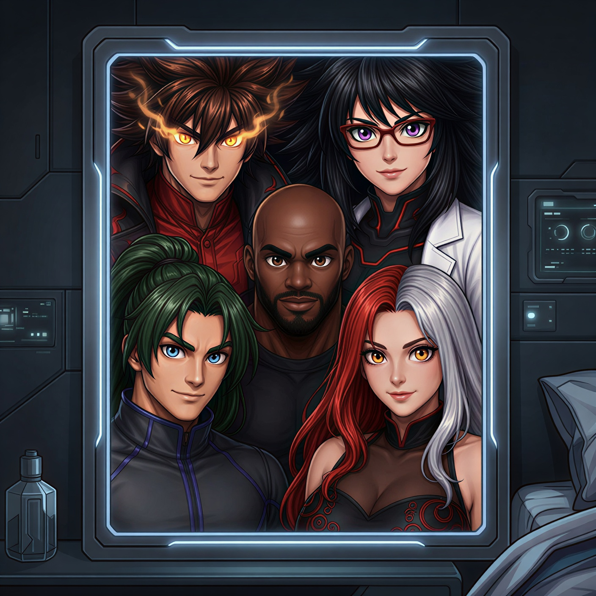

Em um universo alternativo, uma alteração no DNA dos primeiros ancestrais humanos criou uma variação genética que se manifestaria séculos depois, elevando a expectativa de vida para até 150 anos e desacelerando o envelhecimento a partir dos 40. Como resultado, alguns indivíduos passaram a nascer com habilidades extraordinárias, enquanto outros sofrem mutações genéticas instáveis, transformando-se em criaturas monstruosas originadas por colapsos genéticos, emoções extremas, experimentos científicos, exposição energética ou obsessões levadas ao limite.
Nesse mundo, grandes conflitos globais também ocorreram, incluindo guerras equivalentes às Guerras Mundiais, travadas com armas muito mais avançadas e lideradas por figuras históricas diferentes das conhecidas em nossa realidade. Após décadas de reconstrução e avanço acelerado, o planeta entrou em uma nova era dominada por megacorporações, organizações militares, super-humanos e tecnologias extremas.
Com o tempo, o heroísmo deixou de representar justiça absoluta: muitos heróis passaram a agir movidos por fama, dinheiro, poder ou interesses políticos, enquanto outros continuaram dedicando suas vidas à proteção dos inocentes. Em um mundo repleto de super-humanos, existem desde símbolos de esperança e verdadeiros defensores da humanidade até figuras controversas, mercenárias ou corrompidas pelo próprio status.
Entre os mais respeitados estão os Pulsebreakers: Igneus Kane, Aria Bastos, Drake Harper, Gale Skylark e Selena Sunderlund. Mesmo longe de serem perfeitos, o grupo é conhecido por colocar a segurança dos civis acima de fama, dinheiro ou influência enquanto enfrenta supervilões, criaturas monstruosas, tecnologias fora de controle e ameaças capazes de levar o mundo à extinção.